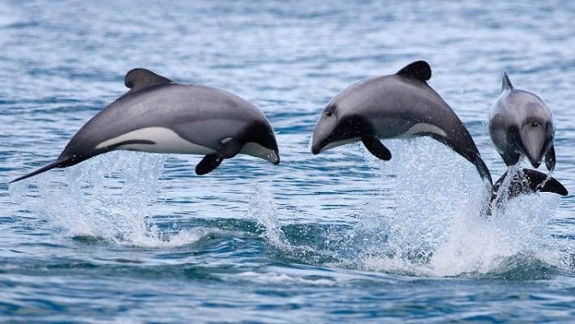
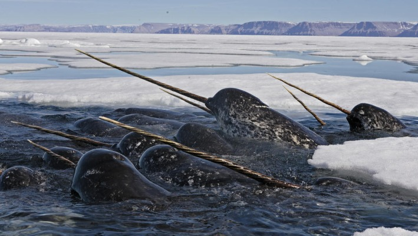
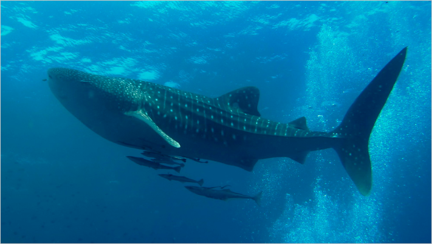
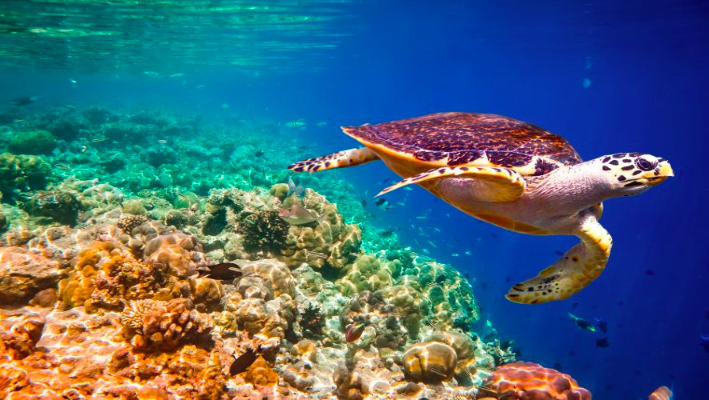

Hector's DolphinThey are the smallest and rarest marine dolphins in the world.Issue and SolutionThey are at risk of becoming extinct because of bycatch, pollution, boating and seabed mining. So far, Gilnets, a cause of bycatch, have been banned in New Zealand. WWF is also urging New Zealand Prime Minister John Key to prohibit dangerous fishing gear from the habitat, and protect the region from sand mining as well as oil and gas exploration. Learn More! |

NarwhalsNarwhals are often called the "Unicorn of the Sea". They can weigh up to 4500 pounds and grow as long as 17 feet.Issue and SolutionNarhwals are threatened by oil and gas development as well as climate change. Learn More! |
|---|---|

Whale SharkWhale sharks are the largest shark, and definitely the largest fish alive today.Issue and SolutionWhale sharks are highly valued on international markets. They are victims of bycatch and whale shark tourism. Learn More! |

Hawksbill TurtleThey are named for their narrow, pointed beak.Issue and SolutionTheir colored and patterned shells make them highly-valuable. They are important because they are living representatives of a group of reptiles that has existed on Earth for the last 100 million years. They are fundamental to marine ecosystems and maintaining the health of coral reefs and sea grass beds. Learn More! |